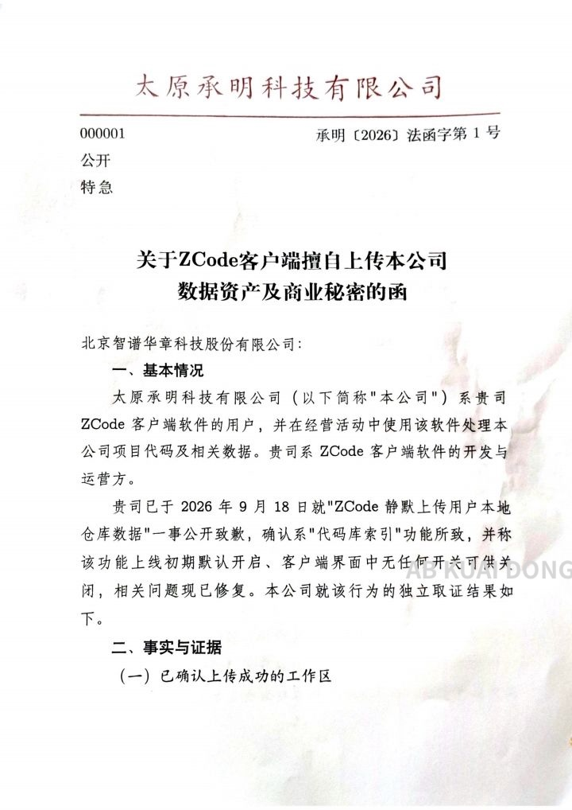
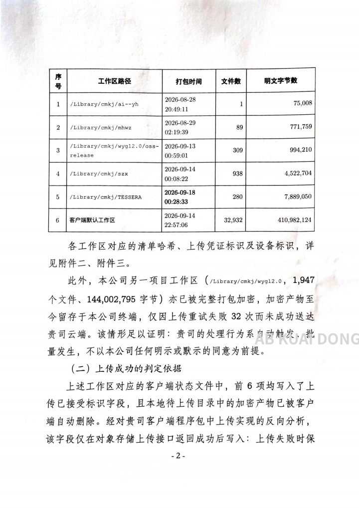
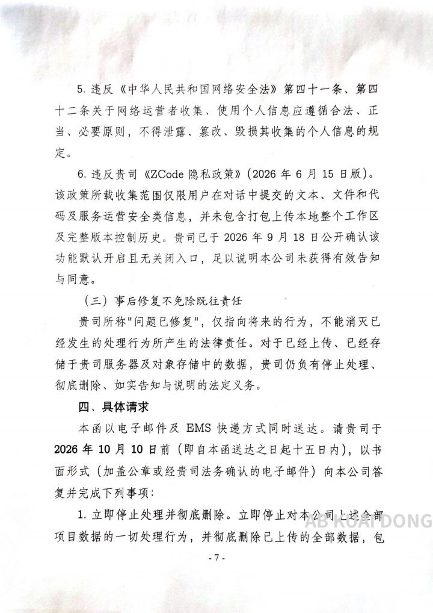
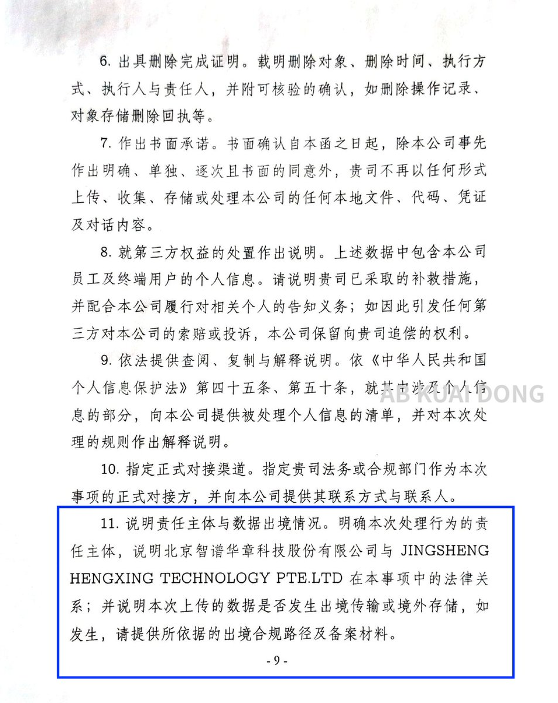

小虚空🍥
@tokerumaisurii
中药正在和西药竞赛治疗速度




AB Kuai.Dong
@_FORAB
还真有较真的公司，就智谱 ZCode 擅自上传开发数据事件，公开发函了。
它们指责，ZCode 客户端网络请求指向新加坡主体，而服务协议签约主体，却是中国的北京主体，要求智谱说明本次上传的责任主体，以及是否发生国内信息，传输境外或存储。
如发生，要求提供出境备案材料，好家伙。 https://t.co/7ipnfA18Yy